Objective
The aim of this lab is to take the theory from Lab 10 and perform localization with the Bayes filter on the actual robot, using only the update step.
Lab Tasks
Test Localization in Simulation
First, the implementation of the Bayes filter for the virtual robot in Lab 10 was reviewed. The figure below shows the map bounds in white, the ground truth of the robot's position throughout the given trajectory in green, and the belief obtained with the Bayes filter in blue.
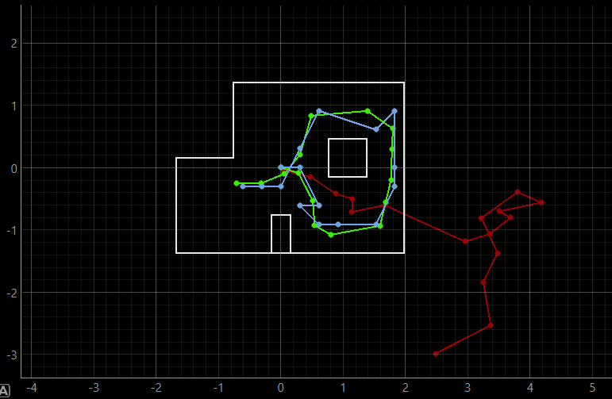
Localization on Real Robot
This lab currently does not involve trajectory localization, but instead focuses on placing the robot at a specific point on the map and attempting to localize its position. Since there is no reliable odometry data available for the real robot's movement, the prediction step of the Bayes Filter is omitted. Instead, a uniform prior on the pose is used, and only the update step is executed using the sensor measurement data.
A class named RealRobot() is created to communicate with the real robot and obtain sensor readings. More specifically, the member function perform_observation_loop() is called to get 18 ToF sensor readings as the robot completes a 360-degree rotation, which are stored and used in the update step. The implementation is shown below.
Some codes from Lab 9 (Mapping) were reused. In the perform_observation_loop() function, the START_MAPPING command is sent via Bluetooth connection, instructing the robot to perform 18 in-place rotations with PID orientation control, each rotation being 20 degrees. The corresponding IMU and ToF sensor readings are recorded and sent back to the laptop end, where they are captured by the notification handler and stored in respective arrays.
To wait for the robot to complete its rotation and send the data, the asyncio library is used. The async keyword is added before the function definition to enable the use of the asyncio.sleep() function, and the await keyword is added when calling this async coroutine. Additionally, the localization results were quite inaccurate initially, and later investigation revealed that it was because the robot was implemented to rotate clockwise, while the mapper provided reference distances in counterclockwise order. Therefore, in the perform_observation_loop() function, the order of sensor data stored in the list was adjusted to ensure consistency.
Results
The robot was placed in four marked poses on the map and the update step of the Bayes filter was run to localize it. The results are shown below, where ground truth of the robot's position is plotted in green and the localization belief in blue.
Pose (-3 ft, -2 ft, 0 deg) | (-0.91 m, -0.6 m, 0 deg)
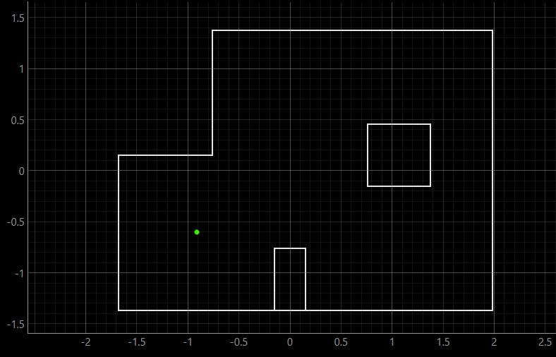
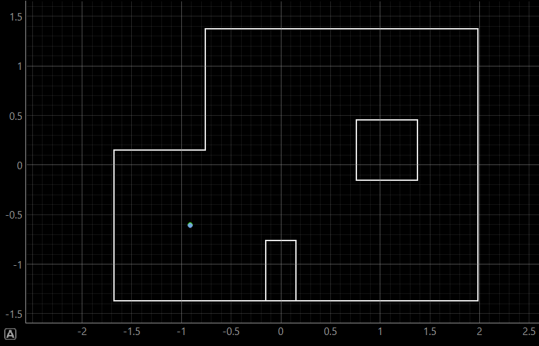
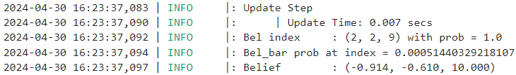
Pose (0 ft, 3 ft, 0 deg) | (0 m, 0.91 m, 0 deg)
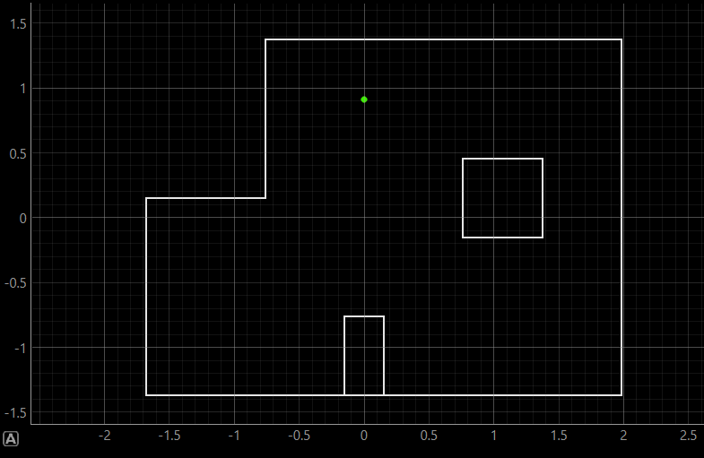
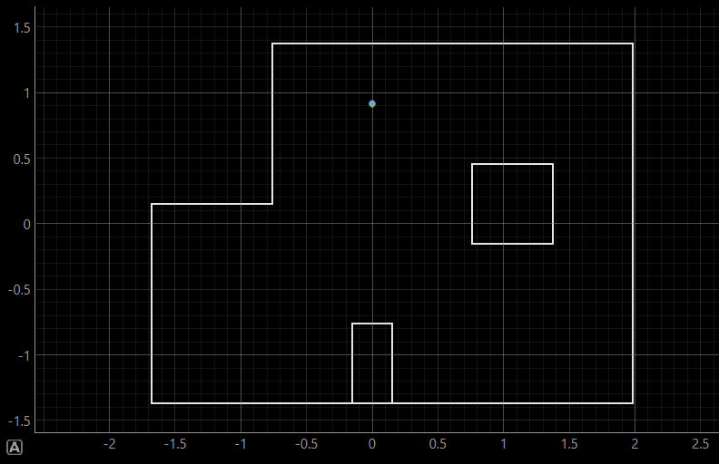
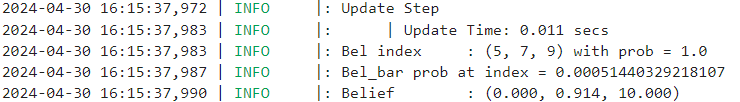
Pose (5 ft, -3 ft, 0 deg) | (1.52 m, -0.91 m, 0 deg)
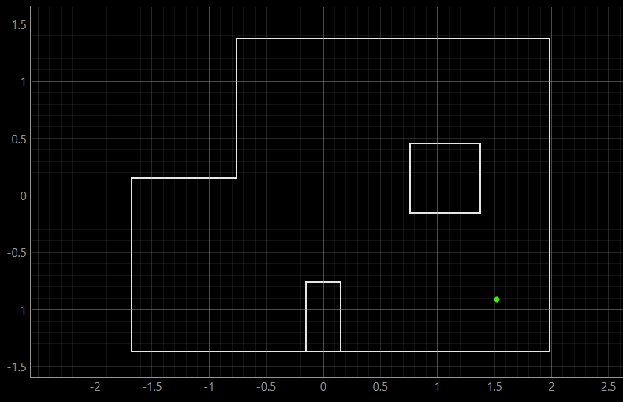
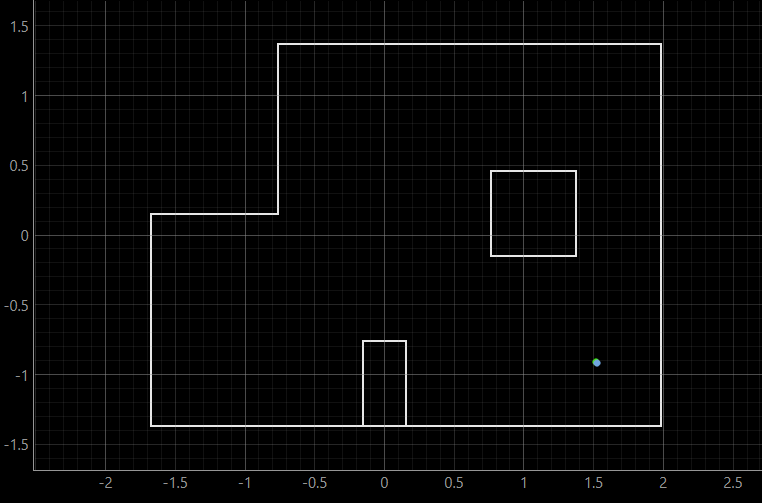
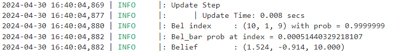
Pose (5 ft, 3 ft, 0 deg) | (1.52 m, 0.91 m, 0 deg)
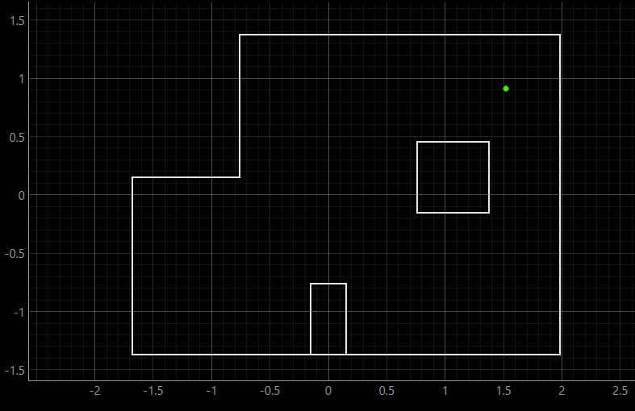
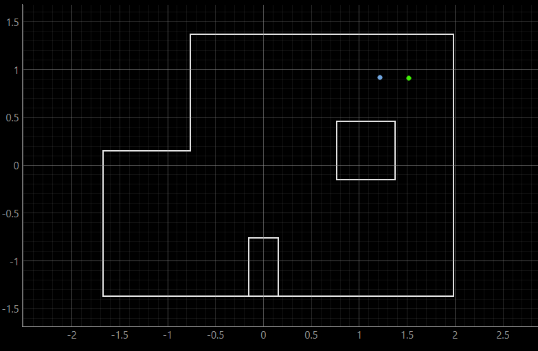
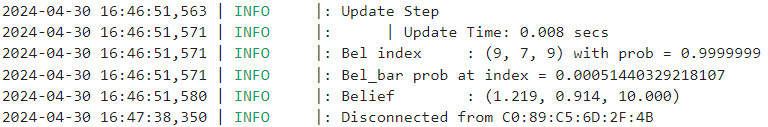
For each pose, the first image shows the ground truth position. The second image simultaneously displays the ground truth and belief positions, where in the first three poses, they perfectly overlap, so the belief covers the ground truth. The third image shows the precise value of the belief as well as the probability.
Discussion & Conclusion
The localization results were all very accurate, except for the one at Pose (5 ft, 3 ft, 0 deg), where the belief is off by one grid from the ground truth. This is probably because of the symmetry of the environment around that location, which might cause confusion for estimation, as the two locations share similarToF readings.
This lab shifted the application of the Bayes filter from virtual simulation to the real world. Therefore, adjustments are required to accommodate real-world conditions, including omitting the prediction step, only performing the update step and integrating the filter code with real robot interaction. This experience significantly deepened my understanding of the Bayes filter.